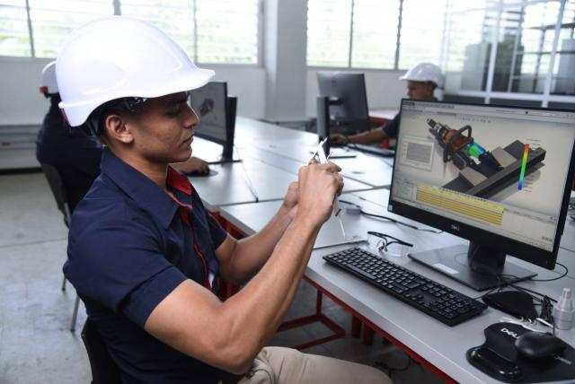

Te formamos
para la VIDA.
Inscríbete

Son programas tecnológicos, técnicos, profundizaciones técnicas, operarios y auxiliares, que van desde gestión empresarial, producción de multimedia hasta sistemas, cocina, entre otros.
Ver másLa Certificación de Competencias Laborales es un proceso gratuito que el SENA desarrolla para verificar y certificar las habilidades, destrezas y conocimientos que tiene una persona para desarrollar una función o labor determinada.
Ver másEl Fondo Emprender SENA es un Fondo creado por el Gobierno Nacional para financiar proyectos empresariales provenientes de Aprendices, Practicantes Universitarios
Ver más